8 Introdução à Programação para Sistemas Embarcados com FreeRTOS
– Luiz Takeda
luiztakeda@alunos.utfpr.edu.br
Resumo: Este minicurso tem como objetivo apresentar os conceitos fundamentais da programação para sistemas embarcados, utilizando o FreeRTOS no ESP32. Ao longo das aulas, os participantes terão a oportunidade de explorar os principais recursos do sistema operacional em tempo real e, ao final, aplicar os conhecimentos adquiridos no desenvolvimento de um projeto prático e funcional.
8.1 Introdução
Com o crescimento da Edge Computing e da Internet of Things (IOT), os programas embarcados tornaram-se cada vez mais complexos. Esses sistemas precisam lidar com múltiplos dados e tomar decisões em tempo real, exigindo que os desenvolvedores projetem arquiteturas capazes de responder e agir diante de diversos eventos assíncronos de forma eficiente.
Para atender a essa nova realidade, surgiu um tipo de sistema operacional enxuto, projetado especialmente para dispositivos com recursos computacionais limitados. Esses sistemas facilitam a organização do código, promovem a modularidade e otimizam o uso do hardware disponível. Assim nasceram os Real-Time Operating Systems (RTOS), que permitem lidar com múltiplas tarefas concorrentes e atender às exigências de processamento em tempo real.
8.1.1 O que é RTOS?
Os Real-Time Operating System (RTOS) são sistemas operacionais nos quais o fator tempo é essencial para o cumprimento de suas funções. Ao contrário da ideia comum, um sistema operacional de tempo real não precisa ser extremamente rápido, mas sim ser previsível, ou seja, deve garantir que determinadas tarefas sejam executadas dentro de prazos conhecidos e controláveis (Maziero 2019).
Existem dois tipos principais de RTOS:
- Hard: O tempo de resposta é crítico, e o não cumprimento pode causar efeitos catastróficos no sistema controlado, com possíveis consequências humanas, econômicas ou ambientais. Um exemplo seria o controle de marcapasso ou de um sistema de freios automotivo.
- Soft: O descumprimento do tempo de resposta é tolerado, ainda que perceptível. Isso pode degradar o desempenho do sistema, mas sem consequências graves. Exemplos incluem tocadores de mídia ou sistemas de climatização residenciais.
8.1.2 Porque usar FreeRTOS?
O FreeRTOS é um dos diversos sistemas operacionais de tempo real disponíveis, podendo ser configurado para atuar como um sistema hard ou soft real-time, dependendo das exigências do projeto (Richard Barry 2025).
Alguns dos benefícios de utilizar o FreeRTOS:
- Código aberto (Open Source): Distribuído sob a licença MIT, o FreeRTOS pode ser utilizado livremente em projetos comerciais e acadêmicos sem custo.
- Manutenibilidade e extensibilidade: Por abstrair detalhes de temporização e possuir baixa interdependência entre módulos, alterações em uma parte do sistema têm pouco impacto no restante da aplicação. Além disso, é fácil adicionar novos módulos.
- Modularidade: Cada tarefa (task) é independente das demais, com responsabilidades bem definidas. Isso favorece organização e clareza no desenvolvimento.
- Desenvolvimento em equipe: Com interfaces bem definidas entre os módulos, diferentes desenvolvedores podem trabalhar de forma paralela e independente.
- Facilidade de teste: A independência entre tarefas permite testar partes do sistema isoladamente, o que melhora a confiabilidade do código.
- Reutilização de código: A modularidade e as abstrações do FreeRTOS facilitam o reaproveitamento de componentes já desenvolvidos em outros projetos.
- Eficiência aprimorada: Aplicações podem ser orientadas a eventos, evitando o uso de técnicas ineficientes como polling, o que economiza recursos computacionais.
8.1.3 O que é ESP32 e ESP-IDF
O ESP32 é um System on Chip (SoC) desenvolvido pela Espressif Systems, que reúne os principais componentes necessários para a criação de dispositivos IoT (Espressif-Systems 2025).
Alguns dos seus recursos incluem:
- Conectividade Wi-Fi (2.4 GHz)
- Bluetooth (clássico e BLE)
- Dois núcleos de alta performance Xtensa® 32-bit LX6
- Co-processador de baixo consumo
- Diversos periféricos integrados (GPIO, ADC, DAC, PWM, SPI, I2C, UART, etc.)
Para o desenvolvimento de firmware, a Espressif disponibiliza o framework ESP-IDF (Espressif IoT Development Framework), que oferece um conjunto robusto de APIs para lidar com funcionalidades como Wi-Fi, Bluetooth, sockets TCP/IP, gerenciamento de tarefas e muito mais.
O ESP-IDF é construído sobre o FreeRTOS, permitindo o desenvolvimento de aplicações multitarefa com suporte a tempo real, tornando o ESP32 uma plataforma poderosa e acessível para projetos embarcados modernos.
Ao longo deste minicurso, exploraremos os principais conceitos do FreeRTOS aplicados ao ESP32, com foco em multitarefa, sincronização e comunicação entre tarefas. A abordagem será teórico-prática, culminando no desenvolvimento de um projeto funcional que integra sensores, interface web e comunicação em tempo real.
8.2 Ferramentas e Recursos
8.2.1 Software
Para facilitar o desenvolvimento do código será utilizado a extensão ESP-IDF para VSCode.

8.2.2 Hardware
Os exemplos serão executados no ESP32 WROOM devkit.
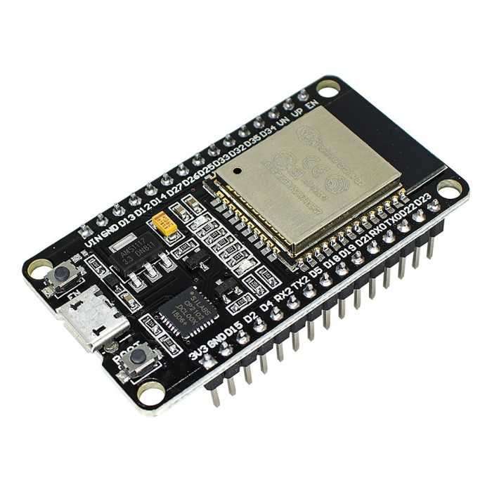
8.2.3 Recursos
Os fundamentos, API e exemplos foram retirados das documentações oficiais FreeRTOS(Richard Barry 2025) e ESP-IDF(Espressif-Systems 2025) respetivamente.
8.3 Conceitos
Alguns conceitos são importantes para compreender melhor o funcionamento do FreeRTOS e sua abordagem à multitarefa.
8.3.1 Multitasking
Multitasking é a capacidade de um sistema operacional executar múltiplas tarefas. Em sistemas operacionais completos (como Linux ou Windows), é implementado através de processos e threads, com suporte à memória virtual e isolamento de contexto(Richard Barry 2025).
Já em sistemas de tempo real enxutos, como o FreeRTOS, não há memória virtual, todas as tarefas compartilham o mesmo espaço de endereçamento.Por isso, o termo utilizado é task por não ter a distinção entre processo e thread. Cada task possui sua própria pilha e contexto de execução, mas compartilha os mesmos recursos globais do microcontrolador.
8.3.2 Multitasking Vs Concurrency
Um processador convencional de um único núcleo pode executar apenas uma tarefa por vez. No entanto, ao alternar rapidamente entre várias tarefas, o sistema cria a impressão de que elas estão sendo executadas ao mesmo tempo. Esse comportamento é chamado de multitasking, e o diagrama abaixo ilustra a diferença entre o que é percebido pelo usuário e o que realmente acontece na CPU(Richard Barry 2025).
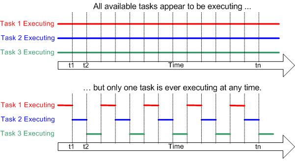
Já o termo concorrência refere-se à ideia de que múltiplas tarefas estão em progresso no mesmo intervalo de tempo. Em um sistema de núcleo único, isso é obtido por meio da alternância entre tarefas (multitasking). Em sistemas com múltiplos núcleos, a concorrência pode resultar em paralelismo real, onde tarefas de fato são executadas simultaneamente em diferentes núcleos do processador.
8.3.3 Scheduling
O Scheduler é a parte do Kernel responsável por decidir qual task será executada em cada instante(Richard Barry 2025).
Durante o tempo de vida de uma tarefa, o núcleo pode interrompê-la e retomá-la diversas vezes, alternando entre as difeentes tasks do sistema de acordo com a regras de escalonamento.
A politica de agendamento (scheduling policy) é o algoritimo utilizado pelo scheduler para decidir qual tarefa será executada em cada momento. Em sistemas operacionais tradicionais, essa política geralmente busca distribuir o processador de forma “justa” entre as tasks. Já em sistemas de tempo real, como o FreeRTOS, o objetivo principal é atender prazos e prioridades, garantindo previsibilidade no comportamento do sistema.
8.3.3.1 Estados de uma tarefa
Um dos conceitos que tornam possível a utilização do scheduler é que cada task possui um estado. Os principais estados no FreeRTOS são:
Em execução (Running): a tarefa está sendo executada no momento. Sempre haverá no máximo uma task em execução por núcleo.
Pronta (Ready): a tarefa está pronta para ser executada, aguardando o processador.
Bloqueada (Blocked): a tarefa está esperando um evento temporal ou externo. Exemplo: ao chamar vTaskDelay(), a task permanece bloqueada até o tempo expirar. Neste estado, ela não consome processamento.
Suspendida (Suspended): semelhante ao estado bloqueada, a tarefa não consome CPU, porém não está aguardando nenhum evento ou tempo para sair desse estado. A entrada e saída dele é feita explicitamente com vTaskSuspend() e xTaskResume().
A figura abaixo ilustra um exemplo de transições entre os estados de uma tarefa no FreeRTOS.
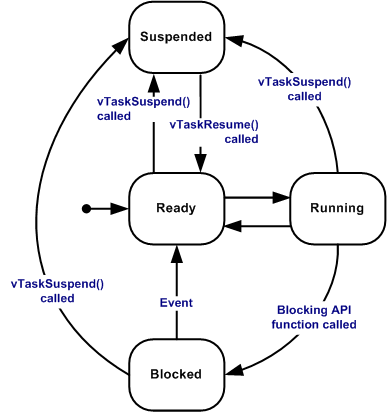
8.3.4 Real-Time Scheduling
Sistema de tempo real, realizam multitasking seguindo os mesmo principios porém com objetivos diferentes. Isso é refletido na politica de agendamento, em que um RTOS deve responder a eventos que ocorrem na vida real, no qual o tempo de respota é crucial para desempenhar o seu papel(Richard Barry 2025).
Para atingir esse objetivo o desenvolvedor deve atribuir uma prioridade para cada tarefa, e as de maior prioridade será executadas sempre que possivel garantindo o tempo de resposta para eventos cruciais.
Sistemas de tempo real realizam multitasking seguindo os mesmos princípios dos sistemas operacionais convencionais, mas com objetivos diferentes. A principal diferença está na política de agendamento, já que um RTOS deve responder a eventos do mundo real, onde o tempo de resposta é crucial(Richard Barry 2025).
Para atingir esse objetivo, o desenvolvedor atribui uma prioridade a cada tarefa. No FreeRTOS, as tarefas de maior prioridade sempre terão preferência de execução, podendo interromper (preempção) as de menor prioridade, garantindo assim que eventos críticos recebam resposta dentro do prazo exigido.
Quando várias tarefas possuem a mesma prioridade, o escalonador pode aplicar round-robin, alternando entre elas de forma justa. Dessa forma, o mecanismo de escalonamento em tempo real combina determinismo e flexibilidade, permitindo que o sistema atenda requisitos críticos sem desperdiçar recursos.
8.4 Programação
Agora iremos aprofundar nos conceitos e funcionamento do FreeRTOS.
8.4.1 Tarefas (Tasks)
Conforme ja apresentado, as tasks são utilizadas para modularizar os componentes de um sistema e torna-los idependentes. Uma aplicação freeRTOS é composta por multiplas task em que cada uma tem sua propria stack, ponto de entrada e loop.
8.4.1.1 Especificações
As tarefas são implementadas utilizando uma função, o prototipo é o seguinte:
void vATaskFunction( void * pvParameters );Um exemplo da estrutura de uma task implementada:
void vATaskFunction( void * pvParameters )
{
/*
* Variáveis alocadas na pilha podem ser declaradas normalmente dentro de uma função.
* Cada instância de uma tarefa criada usando esta função de exemplo terá sua
* própria instância separada de lStackVariable alocada na pilha da tarefa.
*/
long lStackVariable = 0;
/*
* Em contraste com variáveis alocadas na pilha, variáveis declaradas com a
* palavra-chave `static` são alocadas em um local específico da memória pelo linker.
* Isso significa que todas as tarefas que chamarem vATaskFunction compartilharão
* a mesma instância de lStaticVariable.
*/
static long lStaticVariable = 0;
while(1)
{
/* O código para implementar a funcionalidade da tarefa ficará aqui. */
}
/*
* Se a implementação da tarefa algum dia sair do loop acima, então a tarefa
* deve ser deletada antes de alcançar o fim da função que a implementa.
* Quando NULL é passado como parâmetro para a função da API vTaskDelete(),
* isso indica que a tarefa a ser deletada é a própria (a que está chamando).
*/
vTaskDelete( NULL );
}Para criar um task utilizamos a função xTaskCreate:
/**
* @brief Cria uma task
*
* @param pvTaskCode Função que implementa a task
* @param pcName Nome utilizado para debug
* @param usStackDepth Tamanho da stack em words
* @param pvParameters Parametro que será passado para a task
* @param uxPriority Prioridade de execução da task
* @param pxCreatedTask Ponteiro para o handle da task
* @return
*/
BaseType_t xTaskCreate(
TaskFunction_t pvTaskCode,
const char * const pcName,
configSTACK_DEPTH_TYPE usStackDepth,
void * pvParameters,
UBaseType_t uxPriority,
TaskHandle_t * pxCreatedTask );Um exemplo simples é a utilização de uma task para leitura de dados advindos da UART:
#include "driver/uart.h"
#include "driver/gpio.h"
#include "string.h"
#include "esp_log.h"
#include "freertos/FreeRTOS.h"
#include "esp_err.h"
//**************************************************
// Defines
//**************************************************
#define UART_PORT UART_NUM_2 // Porta UART utilizada (UART2)
#define UART_BAUD 115200 // Baudrate da UART
#define UART_TX_PIN GPIO_NUM_17 // Pino de TX
#define UART_RX_PIN GPIO_NUM_16 // Pino de RX
#define BUF_SIZE 1024 // Tamanho do buffer de recepção
//**************************************************
// Globals
//**************************************************
static const char TAG[] = "task"; // Tag usada para logs
//**************************************************
// Function Prototypes
//**************************************************
void uart_initialize(); // Inicialização da UART
void uart_rx_task(void *pvParameters); // Task para receber dados via UART
//**************************************************
// Public Functions
//**************************************************
void app_main()
{
// Inicializa UART2 com a configuração definida
uart_initialize();
// Cria a task de recepção da UART
BaseType_t res = xTaskCreate(
uart_rx_task, // Função da task
"uart_rx", // Nome da task
2048, // Stack em bytes (ajustado para comportar logs e buffer)
NULL, // Parâmetro passado (não usado)
1, // Prioridade (maior que idle)
NULL // Handle da task (não usado aqui)
);
// Verifica se a task foi criada com sucesso
if (res != pdTRUE)
{
ESP_LOGE(TAG, "%s:Fail to create task",__func__);
return;
}
}
//**************************************************
// Static Functions
//**************************************************
void uart_initialize()
{
// Estrutura de configuração da UART
const uart_config_t uart_config = {
.baud_rate = UART_BAUD,
.data_bits = UART_DATA_8_BITS,
.parity = UART_PARITY_DISABLE,
.stop_bits = UART_STOP_BITS_1,
.flow_ctrl = UART_HW_FLOWCTRL_DISABLE,
.source_clk = UART_SCLK_DEFAULT,
};
// Instala driver da UART (buffer de RX em dobro, sem TX buffer, sem fila de eventos)
ESP_ERROR_CHECK(uart_driver_install(UART_PORT, BUF_SIZE * 2, 0, 0, NULL, 0));
// Aplica configuração da UART
ESP_ERROR_CHECK(uart_param_config(UART_PORT, &uart_config));
// Define os pinos de TX/RX da UART2
ESP_ERROR_CHECK(uart_set_pin(UART_PORT,
UART_TX_PIN,
UART_RX_PIN,
UART_PIN_NO_CHANGE,
UART_PIN_NO_CHANGE));
}
void uart_rx_task(void *pvParameters)
{
// Aloca buffer para armazenar dados recebidos
uint8_t *data = (uint8_t *)malloc(BUF_SIZE + 1);
while (1)
{
// Lê dados recebidos na UART (timeout de 20 ms)
int len = uart_read_bytes(UART_PORT, data, BUF_SIZE, pdMS_TO_TICKS(20));
if (len <= 0)
{
// Nenhum dado recebido → volta ao início do loop
continue;
}
// Garante terminação de string para log
data[len] = '\0';
// Exibe dados recebidos via log
ESP_LOGI(TAG, "%s:Read \"%s\"", __func__, data);
// Reenvia (eco) os mesmos dados pela UART
uart_write_bytes(UART_PORT, (const char *)data, len);
}
}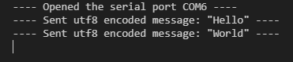
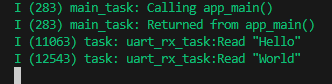
8.4.1.2 Cuidados
Ao utilizar tasks no FreeRTOS, alguns cuidados são essenciais para garantir o bom funcionamento do sistema e evitar falhas difíceis de depurar:
Tamanho da stack: Cada tarefa possui sua própria stack. Se o tamanho configurado for menor que o necessário, ocorrerão stack overflows, que podem travar o sistema ou gerar comportamentos imprevisíveis.
Uso de delays corretos: Tarefas devem sempre conter chamadas como vTaskDelay() ou vTaskDelayUntil(). Tasks que nunca bloqueiam rodam em loop infinito consumindo 100% da CPU, impedindo o escalonamento correto de outras tarefas.
Prioridades mal configuradas: Uma tarefa com prioridade muito alta pode impedir a execução das de menor prioridade (starvation).
Acesso concorrente a recursos compartilhados: Como todas as tasks compartilham o mesmo espaço de memória, variáveis globais devem ser protegidas com mecanismos apropriados:
- semáforos
- mutexes
- filas
Alocação dinâmica excessiva: Evite criar e destruir tarefas repetidamente. Antes de destruir uma task (vTaskDelete()), garanta que ela não esteja segurando mutexes ou filas, ou ocorrerá deadlock.
8.4.1.3 Comparação com SO padrão
O conceito de tasks no FreeRTOS é funcionalmente equivalente ao de threads em sistemas operacionais de propósito geral compatíveis com o padrão POSIX, como Linux. Ambos representam fluxos independentes de execução, com contexto próprio (pilha, registradores, contador de programa) e executados de forma concorrente.
No entanto, há diferenças importantes:
Tasks do FreeRTOS são extremamente leves, projetadas para microcontroladores com poucos kilobytes de RAM.
Threads POSIX geralmente operam dentro de processos com memória virtual, proteção e muito mais recursos disponíveis.
Em POSIX, a criação e gerenciamento é mais pesada; no FreeRTOS é minimalista e determinístico.
A biblioteca pthread define um conjunto de funções para criação e gerenciamento de threads. A seguir, são descritas as principais chamadas.
/**
* @brief Cria uma nova thread POSIX.
*
* Esta função inicia a execução de uma thread, chamando a função especificada
* pelo parâmetro start_routine.
*
* @param thread Ponteiro para pthread_t onde o identificador da thread será armazenado.
* @param attr Atributos para a criação da thread (stack size, prioridade etc.),
* ou NULL para usar os padrões.
* @param start_routine Função que será executada pela nova thread.
* @param arg Argumento passado para a função da thread.
*
* @return 0 em caso de sucesso, ou um código de erro em caso de falha.
*/
int pthread_create(pthread_t *restrict thread,
const pthread_attr_t *restrict attr,
void *(*start_routine)(void *),
void *restrict arg);
/**
* @brief Finaliza a execução da thread chamadora.
*
* A função não retorna. O valor passado em retval será disponibilizado
* para outra thread que chamar pthread_join().
*
* @param retval Valor retornado pela thread.
*/
void pthread_exit(void *retval);
/**
* @brief Aguarda que uma thread termine sua execução.
*
* @param thread ID da thread que se deseja aguardar.
* @param retval Ponteiro que receberá o valor de retorno da thread.
*
* @return 0 em caso de sucesso, ou um código de erro.
*/
int pthread_join(pthread_t thread, void **retval);
/**
* @brief Libera voluntariamente o processador.
*
* A thread permite que outras threads de mesma prioridade executem.
*/
int sched_yield(void);8.4.2 Filas (Queues)
Imagine um cenário onde uma tarefa produz dados de forma contínua, mas outra tarefa, responsável por processá-los, tem um ritmo mais lento. Se a tarefa que produz os dados for mais rápida que a que consome, podemos perder informações se não houver um local para armazená-las temporariamente. Como podemos garantir que os dados sejam armazenados de forma segura e processados na ordem correta, sem que uma tarefa bloqueie a outra?
8.4.2.1 Solução
Para resolver esse problema, o FreeRTOS oferece as Filas (Queues). Elas funcionam como um canal de comunicação seguro, permitindo a troca de dados entre tarefas, ou entre tarefas e interrupções. Uma fila se comporta como um buffer FIFO (first-in first-out), onde o primeiro item a entrar é o primeiro a ser processado.
As filas são flexíveis e podem ser usadas em diversas situações, como:
- Passar mensagens ou dados de um produtos para um consumidor;
- Enfileirar comandos para serem executados por uma tarefa específica;
- Sincronizar tarefas, permitindo que uma tarefa espere que a fila contenha um item.
8.4.2.2 Especificações
Uma fila é um objeto que armazena uma quantidade finita de itens, de um tamanho fixo, definidos em sua criação
As principais funções para manipular filas são:
/**
* @brief Cria uma fila
*
* Aloca os recursos para uma nova fila e retorna o seu handle.
* @param uxQueueLength Máximo de itens que a fila pode armazenar.
* @param uxItemSize Tamanho em bytes de cada item na fila.
* @return Retorna o handle da fila, ou NULL caso não seja possível alocar os recursos.
*/
QueueHandle_t xQueueCreate( UBaseType_t uxQueueLength, UBaseType_t uxItemSize );
/**
* @brief Envia um item para o começo da fila
*
* @param xQueue Handler da fila
* @param pvItemToQueue Endereço do item que será copiado para a fila.
* @param xTicksToWait Tempo máximo (em ticks) para aguardar caso a fila esteja cheia.
* @return pdPASS em caso de sucesso, ou pdFAIL se o item não pôde ser inserido.
*/
BaseType_t xQueueSendToFront( QueueHandle_t xQueue, const void * pvItemToQueue, TickType_t xTicksToWait );
/**
* @brief Envia um item para o final da fila
*
* @param xQueue Handle da fila.
* @param pvItemToQueue Endereço do item que será copiado para a fila.
* @param xTicksToWait Tempo máximo (em ticks) para aguardar caso a fila esteja cheia.
* @return pdPASS em caso de sucesso, ou pdFAIL se o item não pôde ser inserido.
*/
BaseType_t xQueueSendToBack( QueueHandle_t xQueue, const void * pvItemToQueue, TickType_t xTicksToWait );
/**
* @brief Envia um item para o final da fila
*
* @param xQueue Handle da fila.
* @param pvItemToQueue Endereço do item que será copiado para a fila.
* @param xTicksToWait Tempo máximo (em ticks) para aguardar caso a fila esteja cheia.
* @return pdPASS em caso de sucesso, ou pdFAIL se o item não pôde ser inserido.
*/
BaseType_t xQueueSend( QueueHandle_t xQueue, const void * pvItemToQueue, TickType_t xTicksToWait );
/**
* @brief Lê e remove um item do começo da fila
*
* @param xQueue Handle da fila.
* @param pvBuffer Endereço do buffer onde o item lido será copiado.
* @param xTicksToWait Tempo máximo (em ticks) para aguardar um item ficar disponível.
* @return pdPASS em caso de sucesso, ou pdFAIL se a fila estiver vazia e o tempo de espera expirar.
*/
BaseType_t xQueueReceive( QueueHandle_t xQueue, void * const pvBuffer, TickType_t xTicksToWait );8.4.2.3 Exemplo de uso
#include "esp_log.h"
#include "freertos/FreeRTOS.h"
#include "freertos/task.h"
#include "freertos/queue.h"
//**************************************************
// Typedefs
//**************************************************
// Define a estrutura de dados que será enviada/recebida pela fila
typedef struct
{
int counter; // Um simples contador para rastrear a ordem dos pacotes
} package_t;
//**************************************************
// Function Prototypes
//**************************************************
static void producer_task(void *args); // Task que envia dados para a fila (Produtor)
static void consumer_one_task(void *args); // Primeira Task que recebe dados da fila (Consumidor)
static void consumer_two_task(void *args); // Segunda Task que recebe dados da fila (Consumidor)
//**************************************************
// Globals
//**************************************************
static const char TAG[] = "queue_example";
static QueueHandle_t s_queue_handler = NULL;
//**************************************************
// Public Functions
//**************************************************
void app_main()
{
// Cria a Fila
if ((s_queue_handler = xQueueCreate(10, sizeof(package_t))) == NULL)
{
ESP_LOGE(TAG, "%s:Fail to create queue", __func__);
return;
}
ESP_LOGI(TAG, "Queue created successfully.");
// Cria a Task Produtora
if (xTaskCreate(producer_task, "producer_task", 2048, NULL, 1, NULL) != pdPASS)
{
ESP_LOGE(TAG, "%s:Fail to create producer task", __func__);
return;
}
// Cria a primeira Task Consumidora
if (xTaskCreate(consumer_one_task, "consumer_one_task", 2048, NULL, 1, NULL) != pdPASS)
{
ESP_LOGE(TAG, "%s:Fail to create consumer one task", __func__);
return;
}
// Cria a segunda Task Consumidora
if (xTaskCreate(consumer_two_task, "consumer_two_task", 2048, NULL, 1, NULL) != pdPASS)
{
ESP_LOGE(TAG, "%s:Fail to create consumer two task", __func__);
return;
}
}
//**************************************************
// Static Functions
//**************************************************
// Task Produtora: Envia um pacote de dados para a fila periodicamente
static void producer_task(void *args)
{
// Inicializa o pacote de dados
package_t package = {
.counter = 0,
};
while (1)
{
// Tenta enviar o pacote para a fila.
if (xQueueSend(s_queue_handler, &package, pdMS_TO_TICKS(250)) != pdTRUE)
{
ESP_LOGE(TAG, "%s:Fail to send package to queue (Queue Full)", __func__);
continue; // Se falhar, tenta novamente no próximo loop
}
ESP_LOGI(TAG, "%s:Sent counter:%d", __func__, package.counter);
package.counter++;
// Atraso de 500ms antes de enviar o próximo item.
vTaskDelay(pdMS_TO_TICKS(500));
}
// Esta linha nunca será alcançada em um loop infinito, mas é boa prática
vTaskDelete(NULL);
}
// Task Consumidora 1: Recebe dados da fila
static void consumer_one_task(void *args)
{
while (1)
{
package_t package; // Variável para armazenar o dado recebido
// Tenta receber um item da fila.
// O timeout é portMAX_DELAY, o que significa que a task ficará
// BLOQUEADA INDEFINIDAMENTE esperando por dados na fila.
// Isso garante que o Consumidor só consuma ciclos de CPU quando houver dados.
if (xQueueReceive(s_queue_handler, &package, portMAX_DELAY) != pdTRUE)
{
// Se xQueueReceive retornar false com portMAX_DELAY, algo está muito errado,
// mas a lógica simplesmente continua para a próxima iteração.
continue;
}
ESP_LOGI(TAG, "%s:Received counter:%d", __func__, package.counter);
// Simula um processamento longo, atrasando por 1 segundo.
// A outra task Consumidora (consumer_two_task) terá a chance de receber o próximo item.
vTaskDelay(pdMS_TO_TICKS(1000));
}
vTaskDelete(NULL);
}
// Task Consumidora 2: Recebe dados da fila (IDÊNTICA à Consumer 1)
static void consumer_two_task(void *args)
{
while (1)
{
package_t package;
// Recebe o item da fila (bloqueia indefinidamente até que haja dados)
if (xQueueReceive(s_queue_handler, &package, portMAX_DELAY) != pdTRUE)
{
continue;
}
ESP_LOGI(TAG, "%s:Received counter:%d", __func__, package.counter);
// Simula um processamento longo.
vTaskDelay(pdMS_TO_TICKS(1000));
}
vTaskDelete(NULL);
}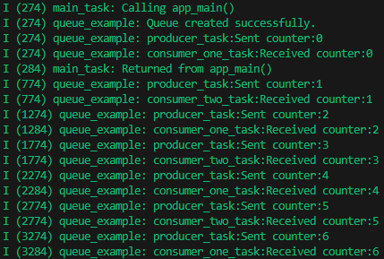
8.4.2.4 Cuidados
Fique atento ao contexto de execução das funções. As que não possuem o sufixo ISR (Interrupt Service Routine) não devem ser chamadas em rotinas de interrupção, pois isso pode causar efeitos colaterais indesejáveis.
8.4.2.5 Comparação com SO padrão
Em sistemas operacionais de propósito geral, como Linux e Windows, também existe o conceito de fila de mensagens (message queue), que cumpre uma função semelhante à fila do FreeRTOS: permitir a troca organizada de dados entre entidades concorrentes.
No entanto, a implementação em um SO convencional é mais complexa, pois opera no nível do kernel e envolve o uso de arquivos especiais e chamadas de sistema (syscalls). Esse modelo garante isolamento e segurança entre processos distintos, mas também traz maior custo computacional e latência.
No caso do Linux, por exemplo, as filas de mensagens seguem o padrão POSIX, que define uma interface padronizada para criação e manipulação dessas filas, por meio de funções como:
- mq_open: abre uma fila já existente ou cria uma nova fila;
- mqt_send: envia uma mensagem para a fila;
- mq_receive: recebe uma mensagem da fila;
- mq_close: fecha o descritor da fila criado por mq_open.
Essas filas podem inclusive ser acessadas como arquivos no sistema, geralmente sob o diretório /dev/mqueue no caso do linux.
Já no FreeRTOS, o conceito é simplificado e otimizado para ambientes embarcados, onde todas as tarefas compartilham o mesmo espaço de memória. As filas são implementadas inteiramente no espaço do usuário (RAM) e manipuladas por funções como xQueueSend() e xQueueReceive(), sem necessidade de interação com o kernel do sistema operacional.
8.4.3 Mutex
Em um dispositivo, é comum que múltiplas tarefas precisem acessar ou modificar um mesmo recurso compartilhado, seja um periférico de hardware ou uma estrutura de dados global na memória.
Imagine o seguinte cenário:
- Tarefa A: Coleta dados periódicos de temperatura e umidade.
- Tarefa B: É acionada de forma assincrona por um sensor de presença.
- Recurso Crítico Compartilhado: Ambos transmitem os dados via Bluetooth.
Se a Tarefa A estiver enviando informações via Bluetooth e, nesse mesmo instante, a Tarefa B for acionada tentando também utilizar o módulo, o acesso simultâneo poderá causar corrupção de dados ou comportamento indefinido no dispositivo.
8.4.3.1 Solução
Para evitar esse tipo de conflito, o FreeRTOS disponibiliza um mecanismo chamado mutex (mutual exclusion semaphore).
O mutex tem como objetivo proteger regiões críticas do código, isto é, trechos onde ocorre o acesso a um recurso compartilhado. Ele garante que apenas uma tarefa por vez possa executar essa seção de código, bloqueando temporariamente as demais até que o recurso seja liberado.
Dessa forma, o mutex assegura que a comunicação via Bluetooth ocorra de maneira controlada e sem interferência entre as tarefas, preservando a integridade dos dados e evitando falhas de concorrência.
8.4.3.2 Especificações
/**
* @brief Cria um mutex para controle de acesso a seções críticas.
*
* Esta função cria um objeto do tipo mutex, que pode ser utilizado para
* garantir exclusão mútua entre tarefas. O mutex criado implementa o
* mecanismo de *priority inheritance*, evitando inversão de prioridade.
*
* @return Handle para o mutex criado (do tipo SemaphoreHandle_t),
* ou NULL caso a alocação de memória falhe.
*/
SemaphoreHandle_t xSemaphoreCreateMutex(void);
/**
* @brief Tenta adquirir o mutex.
*
* Se o mutex já estiver bloqueado por outra tarefa, a tarefa atual
* entrará no estado bloqueado até que o mutex seja liberado ou até que
* o tempo especificado em @p xTicksToWait expire.
*
* @param xSemaphore Handle do mutex retornado por xSemaphoreCreateMutex().
* @param xTicksToWait Tempo máximo (em ticks) que a tarefa deve aguardar
* até que o mutex seja liberado. Use portMAX_DELAY para aguardar
* indefinidamente.
*
* @return pdTRUE se o mutex foi adquirido com sucesso,
* ou pdFALSE se o tempo de espera expirou.
*/
BaseType_t xSemaphoreTake(SemaphoreHandle_t xSemaphore, TickType_t xTicksToWait);
/**
* @brief Libera o mutex anteriormente adquirido pela tarefa.
*
* Esta função deve ser chamada pela **mesma tarefa que obteve o mutex**
* utilizando xSemaphoreTake(). Liberar o mutex de uma tarefa diferente
* pode resultar em comportamento indefinido.
*
* @param xSemaphore Handle do mutex retornado por xSemaphoreCreateMutex().
* @param xTicksToWait (Ignorado para mutexes, mantido por compatibilidade de interface).
*
* @return pdTRUE em caso de sucesso, ou pdFALSE se o mutex não pôde ser liberado.
*/
BaseType_t xSemaphoreGive( SemaphoreHandle_t xSemaphore, TickType_t xTicksToWait);8.4.3.3 Exemplo de uso
#include "esp_log.h"
#include "freertos/FreeRTOS.h"
#include "freertos/task.h"
#include "freertos/semphr.h"
//**************************************************
// Function Prototypes
//**************************************************
static void task(void *args); // Função genérica para ambas as tasks (Task 1 e Task 2)
//**************************************************
// Globals
//**************************************************
static const char TAG[] = "mutex_example";
// Handle do Mutex que será usado para proteger o recurso compartilhado.
static SemaphoreHandle_t s_mutex_handler = NULL;
// Variável compartilhada (recurso crítico) que será acessada por ambas as tasks.
static int s_shared_counter = 0;
//**************************************************
// Public Functions
//**************************************************
void app_main()
{
// Cria o Mutex
if ((s_mutex_handler = xSemaphoreCreateMutex()) == NULL)
{
ESP_LOGE(TAG, "%s:Fail to create mutex", __func__);
return;
}
ESP_LOGI(TAG, "Mutex created successfully.");
// Cria a Task Um
int *id_one = malloc(sizeof(int)); // Aloca memória para o ID da Task
if (id_one == NULL)
{
ESP_LOGE(TAG, "%s:Fail to alloc", __func__);
return;
}
// Define o ID como 1
*id_one = 1;
// Cria a task "task_one" com Prioridade 1
if (xTaskCreate(task, "task_one", 2048, (void *)id_one, 1, NULL) != pdPASS)
{
ESP_LOGE(TAG, "%s:Fail to create task one", __func__);
return;
}
// Cria a Task Dois
int *id_two = malloc(sizeof(int)); // Aloca memória para o ID da Task
if (id_two == NULL)
{
ESP_LOGE(TAG, "%s:Fail to alloc", __func__);
return;
}
// Define o ID como 2
*id_two = 2;
// Cria a task "task_two" com Prioridade 1
if (xTaskCreate(task, "task_two", 2048, (void *)id_two, 1, NULL) != pdPASS)
{
ESP_LOGE(TAG, "%s:Fail to create task two", __func__);
return;
}
}
//**************************************************
// Static Functions
//**************************************************
// Função executada por ambas as tasks
static void task(void *args)
{
int id = *(int *)args; // Recupera o ID da task (1 ou 2)
while (1)
{
// Tenta "tomar" (adquirir) o Mutex
// O timeout é de 250ms. Se o Mutex estiver ocupado por outra task,
// esta task espera por no máximo 250ms.
if (xSemaphoreTake(s_mutex_handler, pdMS_TO_TICKS(250)) != pdTRUE)
{
ESP_LOGE(TAG, "[%d] %s:Fail to take mutex (Timeout)", id, __func__);
continue; // Tenta novamente no próximo loop
}
// --- INÍCIO DA REGIÃO CRÍTICA (Protegida pelo Mutex) ---
// Modifica o recurso compartilhado (s_shared_counter)
s_shared_counter++;
ESP_LOGI(TAG, "[%d] %s:Shared counter:%d", id, __func__, s_shared_counter);
// --- FIM DA REGIÃO CRÍTICA ---
// Libera o Mutex
// Permite que outra task (esperando por ele) possa adquiri-lo.
xSemaphoreGive(s_mutex_handler);
// Simula um processamento longo antes de tentar acessar o recurso novamente
vTaskDelay(pdMS_TO_TICKS(500));
}
// Esta linha nunca será alcançada em um loop infinito, mas é boa prática
vTaskDelete(NULL);
}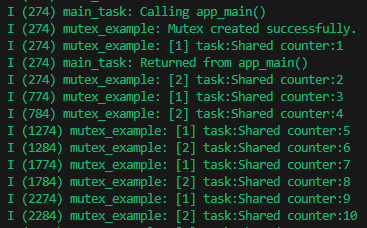
8.4.3.4 Cuidados
O mutex deve sempre ser liberado pela mesma tarefa que o adquiriu. Caso contrário, podem ocorrer comportamentos imprevisíveis, incluindo bloqueios indefinidos de tarefas que aguardam o recurso.
Mutexes não devem ser adquiridos ou liberados dentro de interrupções, para isso deve-se utilizar outras ferramentas de controle.
8.4.3.5 Comparação com SO padrão
O conceito de mutex em sistemas operacionais de propósito geral, como Linux e outros compatíveis com o padrão POSIX, é bastante semelhante ao utilizado no FreeRTOS. Em ambos os casos, o objetivo é o mesmo: garantir acesso exclusivo a uma seção crítica e evitar que múltiplas tarefas ou threads modifiquem simultaneamente um mesmo recurso.
A API POSIX define o uso de mutexes por meio das seguintes funções:
/**
* @brief Inicializa um mutex POSIX.
*
* @param mutex Ponteiro para a estrutura pthread_mutex_t que será inicializada.
* @param attr Ponteiro para uma estrutura pthread_mutexattr_t que define atributos do mutex,
* ou NULL para usar os padrões.
* @return 0 em caso de sucesso, ou um código de erro em caso de falha.
*/
int pthread_mutex_init(pthread_mutex_t *restrict mutex,
const pthread_mutexattr_t *restrict attr);
/**
* @brief Destroi um mutex previamente criado.
*
* @param mutex Ponteiro para o mutex que será destruído.
* @return 0 em caso de sucesso, ou um código de erro em caso de falha.
*/
int pthread_mutex_destroy(pthread_mutex_t *mutex);
/**
* @brief Solicita acesso à seção crítica protegida pelo mutex.
*
* Caso o mutex já esteja bloqueado, a thread será suspensa até que ele seja liberado.
*
* @param mutex Ponteiro para o mutex a ser bloqueado.
* @return 0 em caso de sucesso, ou um código de erro em caso de falha.
*/
int pthread_mutex_lock(pthread_mutex_t *mutex);
/**
* @brief Tenta adquirir o mutex sem bloqueio.
*
* Se o mutex já estiver bloqueado, a função retorna imediatamente com código de erro.
*
* @param mutex Ponteiro para o mutex a ser bloqueado.
* @return 0 em caso de sucesso, ou EBUSY se o mutex estiver ocupado.
*/
int pthread_mutex_trylock(pthread_mutex_t *mutex);
/**
* @brief Libera o mutex, permitindo que outras threads acessem a seção crítica.
*
* @param mutex Ponteiro para o mutex a ser liberado.
* @return 0 em caso de sucesso, ou um código de erro em caso de falha.
*/
int pthread_mutex_unlock(pthread_mutex_t *mutex);Essas funções fazem parte da biblioteca pthread (POSIX Threads), amplamente usada em sistemas Unix-like.
8.4.4 Software Timers
Imagine o cenario em que é necessario cortar a alimentação de um motor ou enviar um pacote via MQTT em um determinado tempo, não bloqueando a task de continuar o seu funcionamento.
8.4.4.1 Solução
Para resolver esse problema é possivel utilizar um Software Timer, em que é definido um tempo de expiração em que ele executará a função atribuida a ele.
8.4.4.2 Especificações
O prototipo da função callback utilizada no timer:
void ATimerCallback( TimerHandle_t xTimer );É necessario especificar qual modo será executado:
- One-shot: É executado uma vez apenas a função após o tempo expirar.
- Auto-reload: Após executar uma vez a função é recarregado o temporizado novamente obtendo-se uma execução periodica.
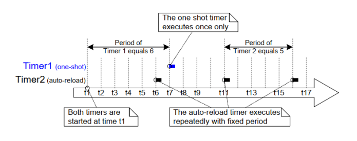
O timer tem dois estados definidos:
- Dormant: Não executará a contagem e a função callback.
- Running: Está contando e executará a função callback.
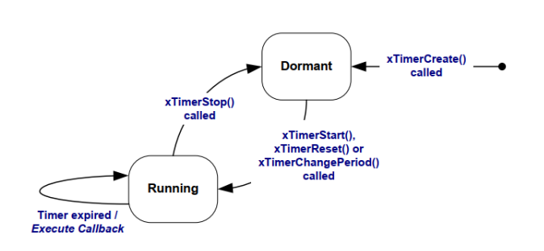
8.4.4.3 Especificações
/**
* @brief Cria um timer
*
* Aloca os recursos para um novo timer e retorna o seu handle.
*
* @param pcTimerName Nome utilizado para debug.
* @param xTimerPeriodInTicks O periodo do timer especificado em tick. Pode ser utilizado a macro pdMS_TO_TICKS() para converter o tempo em ticks.
* @param xAutoReload Passe pdTRUE para criar um auto-reload timer e pdFalse para one-shot timer.
* @param pvTimerID Cada timer tem um ID e o desenvolvedor pode utilizar para oque desejar.
* @param pxCallbackFunction Callback que será executa após expirar o tempo.
* @return retornar o timer handle, caso seja NULL ouve uma insuficiencia de memoria para alocar o recurso.
*/
TimerHandle_t xTimerCreate(
const char * const pcTimerName,
const TickType_t xTimerPeriodInTicks,
const BaseType_t xAutoReload,
void * const pvTimerID,
TimerCallbackFunction_t pxCallbackFunction
);
/**
* @brief Inicia/Reinicia um timer
*
* Caso o timer esteja dormente é colocado em execução.
* Caso o timer esteja em execução é reiniciado o seu contador.
*
* @param xTimer O Handle do timer que será iniciado/reiniciado
* @param xTicksToWait Tempo em ticks para espera o commando ser enviado para a fila.
* @return Pode ter dois valores pdPASS ou pdFAIL
*/
BaseType_t xTimerStart(
TimerHandle_t xTimer,
TickType_t xTicksToWait
);
/**
* @brief Para um timer
*
* Caso o timer esteja em execução é colocado em dormente.
*
* @param xTimer O Handle do timer que será parado.
* @param xTicksToWait Tempo em ticks para espera o commando ser enviado para a fila.
* @return Pode ter dois valores pdPASS ou pdFAIL
*/
BaseType_t xTimerStop(
TimerHandle_t xTimer,
TickType_t xTicksToWait
);
/**
* @brief Deleta um timer, pode ser utilizada ao qualquer momento.
*
* Envia o comando de deletar o timer para a fila de comandos do (RTOS daemon task).
*
* @param xTimer O Handle do timer que será deletado.
* @param xTicksToWait Tempo em ticks para espera o commando ser enviado para a fila.
* @return Pode ter dois valores pdPASS ou pdFAIL
*/
BaseType_t xTimerDelete(
TimerHandle_t xTimer,
TickType_t xTicksToWait
);8.4.4.4 Exemplo de uso
Para desmonstrar em ação, será emulado um temporizador de um forno.
#include "esp_log.h"
#include "freertos/FreeRTOS.h"
#include "freertos/timers.h"
#include "freertos/task.h"
//**************************************************
// Defines
//**************************************************
#define WARMING_UP_MS_TIME 1000 * 5 // Tempo de Pré-aquecimento: 5 segundos (5000ms)
#define BAKING_MS_TIME 1000 * 10 // Tempo de Cozimento/Assar: 10 segundos (10000ms)
//**************************************************
// Enums
//**************************************************
// Define os possíveis estados da máquina de estados do forno
typedef enum
{
OVEN_STATE_START = 0, // Estado inicial
OVEN_STATE_WARMING_UP, // Estado de pré-aquecimento
OVEN_STATE_BAKING, // Estado de cozimento
OVEN_STATE_DONE, // Estado final (concluído)
} oven_state_t;
//**************************************************
// Globals
//**************************************************
static const char TAG[] = "oven_example";
static TaskHandle_t s_oven_task_handle = NULL; // Handle (identificador) da task principal do forno. Usado para notificar a task.
//**************************************************
// Function Prototypes
//**************************************************
static void oven_task(void *_); // Função principal da task que gerencia os estados do forno
static void oven_timer(TimerHandle_t xTimer); // Função de callback do Timer (chamada quando o timer expira)
static void get_temperature(); // Função simulada para ler a temperatura
static void set_heat_element(); // Função simulada para controlar a resistência (elemento de aquecimento)
//**************************************************
// Public Functions
//**************************************************
void app_main()
{
// Cria a task principal do forno, onde a lógica de estado é executada
if (xTaskCreate(oven_task, // Função a ser executada pela task
"oven_task", // Nome amigável da task
2048, // Tamanho da pilha (stack) em bytes
NULL, // Parâmetros a serem passados para a função (nenhum)
1, // Prioridade da task (ajustável)
&s_oven_task_handle) // Handle onde a referência da task será armazenada
!= pdPASS)
{
ESP_LOGE(TAG, "%s:Fail to create task", __func__); // Log de erro se a criação falhar
return;
}
}
//**************************************************
// Static Functions
//**************************************************
// Task principal do forno
static void oven_task(void *_)
{
oven_state_t current_state = OVEN_STATE_START; // Inicializa o estado com START
while (1) // Loop infinito (padrão de tasks do FreeRTOS)
{
// Máquina de estados: a lógica muda conforme o estado atual
switch (current_state)
{
case OVEN_STATE_START:
ESP_LOGI(TAG, "%s:Start", __func__);
current_state = OVEN_STATE_WARMING_UP; // Transiciona para o próximo estado
break;
case OVEN_STATE_WARMING_UP:
{
ESP_LOGI(TAG, "%s:Warming Up", __func__);
// Cria um timer one-shot (pdFALSE) que dispara após 5s
TimerHandle_t warming_up_timer = xTimerCreate(
"oven_timer", // Nome do Timer
pdMS_TO_TICKS(WARMING_UP_MS_TIME), // Período do Timer (converte ms para Ticks do FreeRTOS)
pdFALSE, // Tipo: pdFALSE = one-shot (dispara uma vez)
NULL, // ID do Timer (não usado neste exemplo)
oven_timer); // Função de callback a ser chamada
// Inicia o timer. portMAX_DELAY aguarda indefinidamente se o queue do timer estiver cheio (deve sempre funcionar)
BaseType_t res = xTimerStart(warming_up_timer, portMAX_DELAY);
if (res != pdTRUE)
{
ESP_LOGE(TAG, "%s:Fail to start timer", __func__);
}
while (1) // Loop interno para monitorar o pré-aquecimento
{
// Espera notificação do timer. O `pdTRUE` limpa o contador de notificações após receber.
// O timeout de 500ms permite que a task saia da espera periodicamente para fazer outras ações.
if (ulTaskNotifyTake(pdTRUE, pdMS_TO_TICKS(500)))
{
ESP_LOGI(TAG, "%s:Warming up done", __func__);
current_state = OVEN_STATE_BAKING; // O timer disparou, muda para o estado de cozimento
// Apaga o timer depois de usar para liberar memória
res = xTimerDelete(warming_up_timer, portMAX_DELAY);
if (res != pdTRUE)
{
ESP_LOGE(TAG, "%s:Fail to delete timer", __func__);
}
break; // Sai do loop interno e volta para o switch principal
}
// Ações executadas a cada 500ms enquanto espera o timer
get_temperature(); // Simula leitura de temperatura (ação de controle)
set_heat_element(); // Simula controle da resistência (ação de controle)
}
}
break;
case OVEN_STATE_BAKING:
{
ESP_LOGI(TAG, "%s:Baking", __func__);
// Cria um timer one-shot que dispara após 10s (lógica similar ao WARMING_UP)
TimerHandle_t baking_timer = xTimerCreate(
"oven_timer",
pdMS_TO_TICKS(BAKING_MS_TIME),
pdFALSE, // one-shot
NULL,
oven_timer);
// Inicia o timer
BaseType_t res = xTimerStart(baking_timer, portMAX_DELAY);
if (res != pdTRUE)
{
ESP_LOGE(TAG, "%s:Fail to start timer", __func__);
}
while (1) // Loop interno para monitorar o cozimento
{
// Espera notificação do timer (timeout de 500ms para controle)
if (ulTaskNotifyTake(pdTRUE, pdMS_TO_TICKS(500)))
{
ESP_LOGI(TAG, "%s:Baking done", __func__);
current_state = OVEN_STATE_DONE; // O timer disparou, muda para o estado DONE
// Apaga o timer para liberar memória
res = xTimerDelete(baking_timer, portMAX_DELAY);
if (res != pdTRUE)
{
ESP_LOGE(TAG, "%s:Fail to delete timer", __func__);
}
break; // Sai do loop interno
}
// Ações executadas a cada 500ms enquanto espera o timer
get_temperature();
set_heat_element();
}
}
break;
case OVEN_STATE_DONE:
ESP_LOGI(TAG, "%s:Done", __func__);
vTaskDelete(NULL); // Encerra a task principal (passando NULL deleta a task atual)
return; // O return é importante para sair da função após deletar a task
default:
break;
}
}
vTaskDelete(NULL); // Linha de segurança (teoricamente inalcançável se o DONE for atingido)
}
// Callback chamado quando o timer (criado no WARMING_UP ou BAKING) expira
static void oven_timer(TimerHandle_t xTimer)
{
// Verifica se o handle da task principal existe (deve ser != NULL)
if (s_oven_task_handle != NULL)
{
// Notifica a task principal do forno (s_oven_task_handle).
// Isso tira a task da função ulTaskNotifyTake() e permite que ela continue.
xTaskNotifyGive(s_oven_task_handle);
}
}
// Funções simuladas para controle de hardware
static void get_temperature()
{
// Simulação: aqui seria a leitura de um sensor de temperatura (ex: termopar/termistor)
ESP_LOGI(TAG, "%s:Read temperature", __func__);
}
static void set_heat_element()
{
// Simulação: aqui seria o acionamento de um relé/triac para ligar/desligar a resistência
ESP_LOGI(TAG, "%s:Set heat element", __func__);
}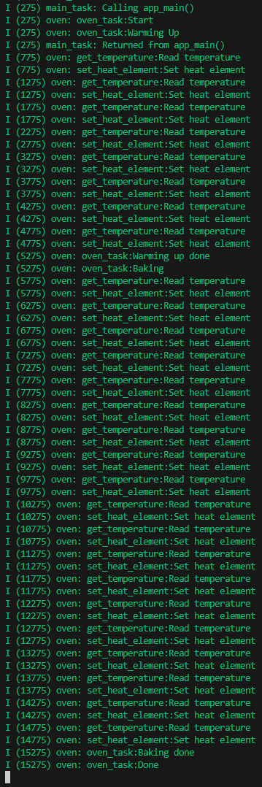
8.4.4.5 Cuidados
Um cuidado necessario ao utilizar o software timer é que a callback é executada no contexto da RTOS daemon task. Assim qualquer função que bloqueia uma task poderá afetar o desempenho ou o bloqueio indefinido da mesma, paralisando outros recursos que dependem dela.
8.4.4.6 Comparação com SO padrão
Em sistemas operacionais de propósito geral compatíveis com POSIX (como Linux), o recurso equivalente ao Software Timer do FreeRTOS é o POSIX timer. Ambos têm como objetivo executar uma função (callback) de forma periódica ou única após um intervalo de tempo.
A principal diferença é que, enquanto o FreeRTOS utiliza o daemon de timer interno para agendar a execução dos callbacks dentro do próprio kernel, o POSIX cria temporizadores gerenciados pelo sistema operacional, associados a sinais ou threads.
A API POSIX define o uso de timers principalmente por meio das seguintes funções:
/**
* @brief Cria um novo timer POSIX.
*
* @param clockid Tipo de relógio a ser utilizado (ex.: CLOCK_REALTIME ou CLOCK_MONOTONIC).
* @param sevp Estrutura que define como a notificação será entregue
* (por exemplo, via sinal ou thread).
* @param timerid Ponteiro onde o identificador do timer será armazenado.
* @return 0 em caso de sucesso; -1 em caso de falha (com errno ajustado).
*/
int timer_create(clockid_t clockid,
struct sigevent *restrict sevp,
timer_t *restrict timerid);
/**
* @brief Inicia ou reinicia um timer POSIX.
*
* O temporizador pode ser configurado como one-shot ou periódico.
*
* @param timerid Identificador do timer criado anteriormente.
* @param flags Permite controlar o comportamento (0 para padrões).
* @param value Estrutura que define o tempo inicial e o período.
* @param ovalue Opcional - retorna o estado anterior do timer.
* @return 0 em caso de sucesso; -1 em caso de falha.
*/
int timer_settime(timer_t timerid, int flags,
const struct itimerspec *restrict value,
struct itimerspec *restrict ovalue);
/**
* @brief Recupera a configuração atual de um timer.
*
* @param timerid Identificador do timer.
* @param value Estrutura onde o tempo será armazenado.
* @return 0 em caso de sucesso; -1 em caso de falha.
*/
int timer_gettime(timer_t timerid, struct itimerspec *value);
/**
* @brief Remove um timer POSIX do sistema.
*
* @param timerid Identificador do timer.
* @return 0 em caso de sucesso; -1 em caso de falha.
*/
int timer_delete(timer_t timerid);8.5 Projeto final
Com os conceitos explorados nas seções anteriores é possível desenvolver uma aplicação completa utilizando FreeRTOS e os recursos do ESP32. O projeto final consiste em uma dashboard integrada, hospedada no próprio microcontrolador, que oferece as seguintes funcionalidades:
- Controle de 4 saídas digitais.
- Monitoramento de 3 entradas digitais.
- Visualização em gráfico dos valores analógicos provenientes de um joystick.
- Exibição gráfica dos valores de um sensor DHT11 (temperatura e umidade).
- Servidor web local executando diretamente no ESP32.
- Atualizações em tempo real utilizando Server-Sent Events (SSE).
8.5.1 Estrutura
O projeto é organizado em componentes independentes, armazenados na pasta components/. Cada componente encapsula a lógica de uma feature específica da aplicação, expondo apenas a interface necessária e comunicando-se com os demais por meio de eventos, filas, callbacks ou chamadas diretas de função. Essa abordagem modular facilita a manutenção, possibilita testes unitários e promove um design mais limpo e escalável.
A imagem a seguir apresenta o diagrama de interação entre os componentes:
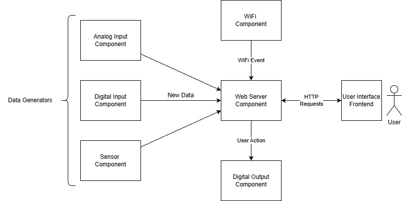
8.5.2 Digital Input Component
O componente Digital Input é responsável por monitorar as entradas digitais do ESP32 e notificar automaticamente todos os módulos que tenham registrado um event handler (callback). Esses handlers são armazenados em uma lista encadeada, permitindo que múltiplos ouvintes sejam registrados dinamicamente em tempo de execução.
As funções públicas que compõem a interface do componente são: - digital_input_initialize - Inicializa o módulo, configurando GPIOs, criando mutexes, filas e tasks internas. - digital_input_add_event_handler - Registra uma callback na lista encadeada para receber notificações de mudança de estado. - digital_input_get_state - Retorna o estado atual da entrada digital especificada.
8.5.2.1 Implementação
A seguir está o código completo do componente, contendo: - Tasks internas para leitura (producer) e despacho de eventos (consumer). - Lista encadeada protegida por mutex. - Uma fila para comunicação entre tasks. - Armazenamento interno dos estados por meio de um bitfield, garantindo acesso rápido e eficiente.
#include <stdio.h>
#include "digital_input.h"
#include "esp_log.h"
#include "freertos/FreeRTOS.h"
#include "freertos/semphr.h"
#include "freertos/queue.h"
#include "driver/gpio.h"
//**************************************************
// Typedefs
//**************************************************
// Estrutura de nó para a lista encadeada de handlers de evento.
typedef struct event_node_t
{
// Ponteiro para a função de callback do usuário
digital_input_event_handler_t event_handler;
struct event_node_t *next; // Próximo nó na lista
} event_node_t;
// Estrutura de dados que será enviada pela Fila (`s_input_queue`).
typedef struct
{
digital_input_num_t num; // Qual entrada digital mudou (índice 0, 1, 2...)
bool new_state; // O novo estado do pino (ON/OFF)
} input_queue_data_t;
//**************************************************
// Funtion Prototypes
//**************************************************
static void input_reader_task(void *args); // Task Produtora: Lê os pinos e envia dados para a fila
static void event_dispatcher_task(void *args); // Task Consumidora: Recebe dados da fila e chama os callbacks
//**************************************************
// Globals
//**************************************************
static const char TAG[] = "digital_input";
// Mapeamento dos índices lógicos (0, 1, 2...) para os números físicos de GPIO
static const uint32_t s_input_num_map[] = {GPIO_NUM_25, GPIO_NUM_26, GPIO_NUM_27};
// Ponteiro inicial da lista encadeada (guarda a lista de handlers de evento)
static event_node_t *s_first_node = NULL;
// Mutex para proteger o acesso à lista encadeada de handlers (`s_first_node`)
static SemaphoreHandle_t s_node_mutex = NULL;
// Mutex para proteger a variável que armazena o estado atual dos pinos
static SemaphoreHandle_t s_input_states_mutex = NULL;
// Fila para comunicar eventos de mudança de estado entre as tasks
static QueueHandle_t s_input_queue = NULL;
// Variável que armazena o estado atual de todas as entradas digitais (bitfield)
static uint16_t s_input_states = 0;
//**************************************************
// Public Funtions
//**************************************************
// Inicializa o módulo (cria mutexes, filas, tasks e configura GPIOs)
esp_err_t digital_input_initialize()
{
// Cria Mutex para a lista encadeada de handlers
if ((s_node_mutex = xSemaphoreCreateMutex()) == NULL)
{
ESP_LOGE(TAG, "%s:Fail to create node mutex", __func__);
return ESP_FAIL;
}
// Cria Mutex para a variável de estado dos pinos
if ((s_input_states_mutex = xSemaphoreCreateMutex()) == NULL)
{
ESP_LOGE(TAG, "%s:Fail to create input states mutex", __func__);
return ESP_FAIL;
}
// Cria a Fila com capacidade para 20 itens do tipo input_queue_data_t
if ((s_input_queue = xQueueCreate(20, sizeof(input_queue_data_t))) == NULL)
{
ESP_LOGE(TAG, "%s:Fail to create input queue", __func__);
return ESP_FAIL;
}
// Cria a Task Leitora (input_reader_task) - Prioridade 1
if (xTaskCreate(input_reader_task, "input_reader_task", 2048, NULL, 1, NULL) != pdPASS)
{
ESP_LOGE(TAG, "%s:Fail to create input reader task", __func__);
return ESP_FAIL;
}
// Cria a Task Despachadora (event_dispatcher_task) - Prioridade 2 (mais alta)
// Prioridade maior garante que a notificação de eventos seja rápida.
if (xTaskCreate(event_dispatcher_task, "event_dispatcher_task", 2048, NULL, 2, NULL) != pdPASS)
{
ESP_LOGE(TAG, "%s:Fail to create event dispatcher task", __func__);
return ESP_FAIL;
}
// Configuração dos pinos GPIO como entrada
gpio_config_t io_conf = {
.intr_type = GPIO_INTR_DISABLE, // Desabilita interrupções (o polling é feito pela task)
.mode = GPIO_MODE_INPUT, // Modo Entrada
.pin_bit_mask = 0, // Máscara de pinos (definida no loop abaixo)
.pull_up_en = GPIO_PULLUP_ENABLE, // Habilita Pull-up (para ler botões conectados ao GND)
.pull_down_en = GPIO_PULLDOWN_DISABLE,
};
// Constrói a máscara de bits com base no mapa de pinos (s_input_num_map)
for (uint16_t i = 0; i < _DIGITAL_INPUT_NUM_MAX; i++)
{
io_conf.pin_bit_mask |= 1ULL << s_input_num_map[i];
}
// Aplica a configuração de GPIO
if (gpio_config(&io_conf) != ESP_OK)
{
ESP_LOGE(TAG, "%s:Fail to config inputs", __func__);
return ESP_FAIL;
}
return ESP_OK;
}
// Função pública para o usuário registrar um novo handler de evento
esp_err_t digital_input_add_event_handler(digital_input_event_handler_t handler)
{
// 1. Aloca memória para o novo nó da lista encadeada
event_node_t *new_node = malloc(sizeof(event_node_t));
if (new_node == NULL)
{
ESP_LOGE(TAG, "%s:Fail to alloc new node", __func__);
return ESP_FAIL;
}
new_node->event_handler = handler;
new_node->next = NULL;
// 2. Adquire o Mutex para manipular a lista encadeada (Região Crítica)
if (xSemaphoreTake(s_node_mutex, pdMS_TO_TICKS(1000)) != pdTRUE)
{
ESP_LOGE(TAG, "%s:Fail to take node mutex", __func__);
free(new_node);
return ESP_FAIL;
}
// 3. Adiciona o novo nó ao final da lista
if (s_first_node == NULL)
{
// A lista está vazia
s_first_node = new_node;
}
else
{
// Percorre a lista até o último nó
event_node_t *last_node = s_first_node;
while (last_node->next != NULL)
{
last_node = last_node->next;
}
// Anexa o novo nó
last_node->next = new_node;
}
// 4. Libera o Mutex
xSemaphoreGive(s_node_mutex);
return ESP_OK;
}
// Função pública para o usuário consultar o estado atual de um pino
digital_input_state_t digital_input_get_state(digital_input_num_t num)
{
// Adquire o Mutex para acessar a variável compartilhada `s_input_states`
if (xSemaphoreTake(s_input_states_mutex, pdMS_TO_TICKS(1000)) != pdTRUE)
{
ESP_LOGE(TAG, "%s:Fail to take input states mutex", __func__);
return DIGITAL_INPUT_STATE_FAIL;
}
// Lê o bit correspondente ao número da entrada digital (num)
bool state = (s_input_states >> num) & 0b1;
// Libera o Mutex
xSemaphoreGive(s_input_states_mutex);
// Retorna o estado (ON se o bit for 1, OFF se for 0)
return state ? DIGITAL_INPUT_STATE_ON : DIGITAL_INPUT_STATE_OFF;
}
//**************************************************
// Static Funtions
//**************************************************
// Task Leitora (Produtora): Responsável por fazer o polling dos GPIOs
static void input_reader_task(void *args)
{
TickType_t last_wake_time = xTaskGetTickCount();
while (true)
{
// Delay periódico de 250ms (técnica de polling/anti-bounce simples)
xTaskDelayUntil(&last_wake_time, pdMS_TO_TICKS(250));
// Adquire o Mutex para acessar/atualizar a variável de estado dos pinos
if (xSemaphoreTake(s_input_states_mutex, pdMS_TO_TICKS(1000)) != pdTRUE)
{
ESP_LOGE(TAG, "%s:Fail to take input states mutex", __func__);
continue;
}
// Itera sobre todos os pinos de entrada configurados
for (uint16_t i = 0; i < _DIGITAL_INPUT_NUM_MAX; i++)
{
// Lê o nível lógico do pino GPIO.
// O resultado é invertido (negado) porque o pull-up está ativado:
// LOW (0) -> Botão Pressionado (Estado Lógico ON/True)
// HIGH (1) -> Botão Solto (Estado Lógico OFF/False)
bool level = !gpio_get_level(s_input_num_map[i]);
// Verifica se o estado lido é o mesmo do estado previamente armazenado
if (((s_input_states >> i) & 0b1) == level)
{
continue; // Não houve mudança, passa para o próximo pino
}
// Houve mudança de estado: Cria o pacote de dados para a fila
input_queue_data_t data = {
.num = i,
.new_state = level,
};
// Envia o evento de mudança para a Fila
if (xQueueSend(s_input_queue, &data, pdMS_TO_TICKS(250)) != pdTRUE)
{
ESP_LOGE(TAG, "%s:Fail to send input data to queue", __func__);
continue;
}
// Atualiza a variável de estado global (s_input_states)
if (level)
{
// Seta o bit 'i' (estado ON)
s_input_states |= 0b1 << i;
}
else
{
// Limpa o bit 'i' (estado OFF)
s_input_states &= ~(0b1 << i);
}
}
// Libera o Mutex
xSemaphoreGive(s_input_states_mutex);
}
vTaskDelete(NULL);
}
// Task Despachadora (Consumidora): Responsável por processar a fila e notificar callbacks
static void event_dispatcher_task(void *args)
{
while (true)
{
input_queue_data_t data;
// Bloqueia indefinidamente (portMAX_DELAY) esperando por dados na Fila
if (xQueueReceive(s_input_queue, &data, portMAX_DELAY) != pdTRUE)
{
continue;
}
// Adquire o Mutex para acessar a lista de handlers de evento
if (xSemaphoreTake(s_node_mutex, portMAX_DELAY) != pdTRUE)
{
ESP_LOGE(TAG, "%s:Fail to take node mutex", __func__);
continue; // Se falhar, tenta pegar o próximo item da fila
}
ESP_LOGI(TAG, "%s:Event num:%d state:%d",__func__, data.num, data.new_state);
event_node_t *current_node = s_first_node;
// Percorre toda a lista encadeada de handlers (callbacks)
while (current_node != NULL)
{
// Chama a função de callback registrada pelo usuário
current_node->event_handler(data.num, data.new_state);
current_node = current_node->next;
}
// Libera o Mutex
xSemaphoreGive(s_node_mutex);
}
vTaskDelete(NULL);
}8.5.3 Digital output Component
Componente responsável pelo controle das saídas digitais, garantindo acesso seguro por meio de um mutex, evitando que múltiplas tarefas modifiquem o mesmo pino simultaneamente.
As funções públicas: - digital_output_initialize - inicializa o módulo e configura os GPIOs. - digital_output_get_state - retorna o estado lógico atual de uma saída. - digital_output_set_state - altera o estado de uma saída de forma protegida.
8.5.3.1 Implementação
#include "digital_output.h"
#include "freertos/FreeRTOS.h"
#include "freertos/semphr.h"
#include "esp_log.h"
#include "driver/gpio.h"
//**************************************************
// Globals
//**************************************************
static const char TAG[] = "digital_output";
// Handle do Mutex usado para proteger o acesso simultâneo aos pinos GPIO/recursos do driver.
SemaphoreHandle_t s_mutex = NULL;
//**************************************************
// Public Functions
//**************************************************
// Função de inicialização do módulo
esp_err_t digital_output_initialize()
{
// Configuração dos pinos GPIO
gpio_config_t io_conf = {};
io_conf.intr_type = GPIO_INTR_DISABLE; // Desabilita interrupções
io_conf.mode = GPIO_MODE_INPUT_OUTPUT; // Configura os pinos como entrada E saída
// Máscara de bits: Define quais pinos serão configurados (1, 2, 3 e 4)
io_conf.pin_bit_mask = (1ULL << DIGITAL_OUTPUT_NUM_1) |
(1ULL << DIGITAL_OUTPUT_NUM_2) |
(1ULL << DIGITAL_OUTPUT_NUM_3) |
(1ULL << DIGITAL_OUTPUT_NUM_4);
io_conf.pull_down_en = 0; // Desabilita Pull-down
io_conf.pull_up_en = 0; // Desabilita Pull-up
// Aplica a configuração de GPIO
if (gpio_config(&io_conf) != ESP_OK)
{
ESP_LOGE(TAG, "%s:Fail to configure gpio", __func__);
return ESP_FAIL;
}
// Cria o Mutex para garantir o acesso atômico e seguro às funções de GPIO
if ((s_mutex = xSemaphoreCreateMutex()) == NULL)
{
ESP_LOGE(TAG, "%s:Fail to create mutex", __func__);
return ESP_FAIL;
}
ESP_LOGI(TAG, "%s:Finished", __func__);
return ESP_OK;
}
// Função para ler o estado atual de um pino de saída digital
digital_output_state_t digital_output_get_state(digital_output_num_t num)
{
// 1. Tenta adquirir o Mutex por 500ms
if (xSemaphoreTake(s_mutex, pdMS_TO_TICKS(500)) != pdPASS)
{
// Falha ao adquirir o Mutex (Timeout): retorna estado de falha
return DIGITAL_OUTPUT_FAIL;
}
// --- INÍCIO DA REGIÃO CRÍTICA ---
// Lê o nível lógico atual do pino
bool state = gpio_get_level(num);
// --- FIM DA REGIÃO CRÍTICA ---
// 2. Libera o Mutex
xSemaphoreGive(s_mutex);
// Retorna o estado (ON ou OFF)
return state ? DIGITAL_OUTPUT_ON : DIGITAL_OUTPUT_OFF;
}
// Função para definir o estado de um pino de saída digital
esp_err_t digital_output_set_state(digital_output_num_t num, bool new_state)
{
// 1. Tenta adquirir o Mutex por 500ms
if (xSemaphoreTake(s_mutex, pdMS_TO_TICKS(500)) != pdPASS)
{
// Falha ao adquirir o Mutex
return ESP_FAIL;
}
esp_err_t return_value = ESP_FAIL;
// --- INÍCIO DA REGIÃO CRÍTICA ---
// Tenta definir o nível lógico do pino
if (gpio_set_level(num, new_state) != ESP_OK)
{
// Se a configuração do nível falhar, pula para a seção 'end'
goto end;
}
return_value = ESP_OK; // Sucesso na configuração
end:
// 2. Libera o Mutex (Garantido pela label 'end' e 'goto')
xSemaphoreGive(s_mutex);
// Retorna o resultado da operação
return return_value;
}8.5.4 Analog Input Component
Este componente realiza a leitura das entradas analógicas no modo one-shot, enviando periodicamente os valores lidos para todos os ouvintes registrados em uma lista encadeada de callbacks. Cada função registrada recebe os valores brutos de todos os canais configurados.
As funções publicas são: - analog_input_initialize - inicializa o ADC, cria o mutex e a task leitora. - analog_input_add_event_handler - registra funções de callback que serão notificadas a cada leitura.
8.5.4.1 Implementação
A seguir está o código completo do componente responsável pelas leituras analógicas. Ele é estruturado em torno de uma task periódica que realiza a aquisição dos valores em modo one-shot e despacha esses dados para todos os ouvintes registrados.
A comunicação com o restante do sistema é feita por meio de uma lista encadeada de callbacks, protegida por um mutex que garante operações seguras mesmo sob concorrência. Cada função de callback recebe os valores brutos de todos os canais configurados, permitindo que diferentes partes da aplicação processem os dados conforme necessário.
A implementação também encapsula: - Configuração do driver ADC One-Shot (ADC1). - Conversão periódica com taxa de amostragem fixa (20 Hz). - Controle de concorrência com mutex. - Gestão dinâmica de ouvintes através de uma lista encadeada.
O código abaixo reflete todos esses elementos:
#include "analog_input.h"
#include "esp_log.h"
#include "freertos/FreeRTOS.h"
#include "freertos/task.h"
#include "freertos/semphr.h"
#include "esp_adc/adc_oneshot.h"
//**************************************************
// Typedefs
//**************************************************
// Estrutura de nó para a lista encadeada de handlers de evento.
// Esta lista armazena as funções de callback que serão chamadas com os novos dados ADC.
typedef struct event_node_t
{
struct event_node_t *next; // Próximo nó na lista
analog_input_event_handler_t handler; // Ponteiro para a função de callback do usuário
} event_node_t;
//**************************************************
// Function Prototypes
//**************************************************
static void analog_reader_task(void *args); // Task principal que realiza a leitura periódica do ADC
//**************************************************
// Globals
//**************************************************
static const char TAG[] = "analog_input";
// Ponteiro inicial da lista encadeada de handlers de evento
static event_node_t *s_first_event_node = NULL;
// Mutex para proteger o acesso e manipulação da lista encadeada de handlers
static SemaphoreHandle_t s_event_node_mutex = NULL;
// Handle da Unidade ADC One-Shot (ADC1)
static adc_oneshot_unit_handle_t s_adc1_handler;
// Mapeamento dos índices lógicos (0, 1) para os canais físicos do ADC1
static const uint16_t s_analog_input_num_map[] = {ADC_CHANNEL_6, ADC_CHANNEL_7};
//**************************************************
// Public Functions
//**************************************************
// Inicializa o módulo (configura ADC, cria Mutex e Task)
esp_err_t analog_input_initialize(void)
{
// 1. Cria o Mutex para proteger a lista de handlers
if ((s_event_node_mutex = xSemaphoreCreateMutex()) == NULL)
{
ESP_LOGE(TAG, "%s:Fail to create event node mutex", __func__);
return ESP_FAIL;
}
// 2. Cria a Task Leitora Analógica (Prioridade 1)
if (xTaskCreate(analog_reader_task, "analog_reader_task", 2048, NULL, 1, NULL) != pdPASS)
{
ESP_LOGE(TAG, "%s:Fail to create analog reader task", __func__);
return ESP_FAIL;
}
// 3. Configuração e inicialização da Unidade ADC One-Shot (ADC1)
adc_oneshot_unit_init_cfg_t init_config = {
.unit_id = ADC_UNIT_1, // Usa a Unidade ADC 1
};
// Inicializa a Unidade ADC
if (adc_oneshot_new_unit(&init_config, &s_adc1_handler) != ESP_OK)
{
ESP_LOGE(TAG, "%s:Fail to init oneshot adc1", __func__);
return ESP_FAIL;
}
// 4. Configuração dos Canais ADC
adc_oneshot_chan_cfg_t config = {
.bitwidth = ADC_BITWIDTH_DEFAULT, // Usa a resolução padrão
.atten = ADC_ATTEN_DB_12, // Atenuação de 12dB (permite leitura de 0V a 3.3V)
};
// Configura todos os canais mapeados em s_analog_input_num_map
for (int i = 0; i < _ANALOG_INPUT_NUM_MAX; i++)
{
if (adc_oneshot_config_channel(s_adc1_handler, s_analog_input_num_map[i], &config) != ESP_OK)
{
ESP_LOGE(TAG, "%s:Fail to confi channel %d", __func__, i);
return ESP_FAIL;
}
}
return ESP_OK;
}
// Função pública para registrar uma função de callback para eventos de leitura ADC
esp_err_t analog_input_add_event_handler(analog_input_event_handler_t handler)
{
// Adquire o Mutex (bloqueia indefinidamente) para acessar a lista encadeada
if ((xSemaphoreTake(s_event_node_mutex, portMAX_DELAY)) != pdTRUE)
{
ESP_LOGE(TAG, "%s:Fail to take event node mutex", __func__);
return ESP_FAIL;
}
// Aloca memória para o novo nó
event_node_t *new_node = malloc(sizeof(event_node_t));
if (new_node == NULL)
{
ESP_LOGE(TAG, "%s:Fail to alloc new event node", __func__);
xSemaphoreGive(s_event_node_mutex);
return ESP_FAIL;
}
new_node->handler = handler;
new_node->next = NULL;
// Insere o novo nó no final da lista encadeada
if (s_first_event_node == NULL)
{
// Lista vazia: torna-se o primeiro nó
s_first_event_node = new_node;
}
else
{
// Percorre a lista até o último nó e anexa o novo
event_node_t *last_node = s_first_event_node;
while (last_node->next != NULL)
{
last_node = last_node->next;
}
last_node->next = new_node;
}
// Libera o Mutex
xSemaphoreGive(s_event_node_mutex);
return ESP_OK;
}
//**************************************************
// Static Functions
//**************************************************
// Task Leitora Analógica: Lê o ADC periodicamente e despacha os eventos
static void analog_reader_task(void *args)
{
// Usado para garantir uma leitura periódica e precisa (precisão de tempo garantida pelo FreeRTOS)
TickType_t last_wake_time = xTaskGetTickCount();
int raw[_ANALOG_INPUT_NUM_MAX]; // Array para armazenar os valores brutos lidos
while (true)
{
// Espera até que 50ms tenham se passado desde a última leitura (Taxa de amostragem: 20Hz)
xTaskDelayUntil(&last_wake_time, pdMS_TO_TICKS(50));
// 1. Realiza a Leitura dos Canais ADC
for (int i = 0; i < _ANALOG_INPUT_NUM_MAX; i++)
{
// Lê o valor bruto do canal ADC usando o driver oneshot
if (adc_oneshot_read(s_adc1_handler, s_analog_input_num_map[i], &raw[i]) != ESP_OK)
{
ESP_LOGE(TAG, "%s:Fail to read analog input", __func__);
// Se a leitura falhar, o valor antigo em raw[i] será usado, ou um erro propagado
}
}
// 2. Despacha os Eventos (Chama os Handlers Registrados)
// Adquire o Mutex (bloqueia indefinidamente) para acessar a lista de handlers
if ((xSemaphoreTake(s_event_node_mutex, portMAX_DELAY)) != pdTRUE)
{
// Se não conseguir o Mutex, pula esta iteração (perde o evento)
continue;
}
event_node_t *node = s_first_event_node;
// Percorre toda a lista encadeada de handlers
while (node != NULL)
{
// Para cada handler, envia os dados lidos de todos os canais
for (int i = 0; i < _ANALOG_INPUT_NUM_MAX; i++)
{
// Chama a função de callback: handler(número_do_canal, valor_bruto)
node->handler(i, raw[i]);
}
// Move para o próximo handler na lista
node = node->next;
}
// Libera o Mutex
xSemaphoreGive(s_event_node_mutex);
}
// Esta linha nunca será alcançada
vTaskDelete(NULL);
}8.5.5 Sensor Component
Este componente é responsável por monitorar o sensor DHT11, realizando leituras periódicas de temperatura e umidade e distribuindo esses valores para todos os ouvintes registrados. A comunicação com outros módulos é feita por meio de uma lista encadeada de callbacks, permitindo que múltiplas partes da aplicação recebam os dados conforme necessário.
A cada ciclo, o componente lê o sensor e aciona todas as funções cadastradas, fornecendo os valores atualizados de umidade e temperatura.
As funções públicas disponibilizadas são: - sensor_initialize - inicializa o componente, cria o mutex interno e inicia a task responsável por realizar as leituras periódicas do sensor. - sensor_add_event_handler - registra uma função de callback que será notificada sempre que uma nova leitura for realizada.
8.5.6 Implementação
O código a seguir apresenta a implementação completa do componente responsável por realizar a leitura periódica do sensor DHT11, operando como um módulo de aquisição e distribuição de dados. O componente utiliza uma task interna dedicada à leitura do sensor e uma lista encadeada de callbacks, protegida por um mutex, para notificar todas as funções registradas sempre que novos valores de temperatura e umidade são obtidos.
A arquitetura interna inclui: - Uma task (publisher) que faz a leitura a cada 1500 ms. - Uma lista encadeada de ouvintes, garantindo suporte a múltiplos assinantes. - Proteção de acesso por mutex, evitando condições de corrida. - Encapsulamento completo do fluxo de leitura e notificação.
A seguir, encontra-se a implementação completa do componente:
#include "sensor.h"
#include "esp_log.h"
#include "freertos/FreeRTOS.h"
#include "freertos/task.h"
#include "freertos/semphr.h"
#include <dht.h>
//**************************************************
// Typedefs
//**************************************************
// Estrutura de nó para a lista encadeada de handlers de evento (Assinantes).
typedef struct event_node_t
{
struct event_node_t *next; // Próximo nó na lista
sensor_event_handler_t handler; // Ponteiro para a função de callback do usuário
} event_node_t;
//**************************************************
// Funtion Prototypes
//**************************************************
void sensor_reader_task(); // Task responsável pela leitura periódica do sensor (Publicador)
//**************************************************
// Globals
//**************************************************
static const char TAG[] = "sensor";
// Ponteiro inicial da lista encadeada de handlers (lista de Assinantes)
static event_node_t *s_first_event_node = NULL;
// Mutex para proteger o acesso e manipulação da lista encadeada de handlers
static SemaphoreHandle_t s_event_node_mutex = NULL;
// Variáveis do sensor DHT (tipos definidos em dht.h, assumindo DHT_TYPE_DHT11 e GPIO_NUM_4)
#define DHT_TYPE_DHT11 // Tipo de sensor (DHT11, DHT22, etc.)
#define GPIO_NUM_4 // Pino GPIO onde o sensor está conectado
//**************************************************
// Public Functions
//**************************************************
// Inicializa o módulo (cria Mutex e Task)
esp_err_t sensor_initialize()
{
// 1. Cria o Mutex para proteger a lista de handlers
if ((s_event_node_mutex = xSemaphoreCreateMutex()) == NULL)
{
ESP_LOGE(TAG, "%s:Fail to create event node mutex", __func__);
return ESP_FAIL;
}
// 2. Cria a Task Leitora do Sensor (Prioridade 2)
if (xTaskCreate(sensor_reader_task, "sensor_reader_task", 3072, NULL, 2, NULL) != pdPASS)
{
ESP_LOGE(TAG, "%s:Fail to create sensor reader task", __func__);
return ESP_FAIL;
}
return ESP_OK;
}
// Função pública para registrar uma função de callback (Assinar eventos)
esp_err_t sensor_add_event_handler(sensor_event_handler_t handler)
{
// 1. Aloca memória para o novo nó da lista
event_node_t *new_node = malloc(sizeof(event_node_t));
if (new_node == NULL)
{
ESP_LOGE(TAG, "%s:Fail to alloc event node", __func__);
return ESP_FAIL;
}
new_node->handler = handler;
new_node->next = NULL;
// 2. Adquire o Mutex (bloqueia indefinidamente) para manipular a lista (Região Crítica)
if (xSemaphoreTake(s_event_node_mutex, portMAX_DELAY) != pdTRUE)
{
ESP_LOGE(TAG, "%s:Fail to take event node mutex", __func__);
free(new_node); // Libera memória alocada se falhar
return ESP_FAIL;
}
// 3. Insere o novo nó no final da lista encadeada
if (s_first_event_node == NULL)
{
s_first_event_node = new_node;
}
else
{
event_node_t *last_node = s_first_event_node;
while (last_node->next != NULL)
{
last_node = last_node->next;
}
last_node->next = new_node;
}
// 4. Libera o Mutex
xSemaphoreGive(s_event_node_mutex);
return ESP_OK;
}
//**************************************************
// Static Functions
//**************************************************
// Task Leitora (Publicadora): Lê o sensor periodicamente e chama os callbacks
void sensor_reader_task()
{
// Usado para garantir uma leitura periódica (Taxa de amostragem controlada)
TickType_t last_wake_time = xTaskGetTickCount();
float temperature, humidity;
while (true)
{
// Delay periódico (1500ms) usando xTaskDelayUntil para precisão
xTaskDelayUntil(&last_wake_time, pdMS_TO_TICKS(1500));
// 1. Leitura do Sensor DHT
// Tenta ler a umidade e a temperatura do sensor DHT11 no GPIO 4.
if (dht_read_float_data(DHT_TYPE_DHT11, GPIO_NUM_4, &humidity, &temperature) != ESP_OK)
{
ESP_LOGE(TAG, "%s:Fail to read sensor data", __func__);
continue; // Ignora esta leitura e tenta novamente no próximo ciclo
}
ESP_LOGI(TAG, "%s:Humidity(%f) Temperature(%f)", __func__, humidity, temperature);
// 2. Despacho dos Eventos (Notificação dos Assinantes)
// Adquire o Mutex (bloqueia indefinidamente) para acessar a lista de handlers
if (xSemaphoreTake(s_event_node_mutex, portMAX_DELAY) != pdTRUE)
{
ESP_LOGE(TAG, "%s:Fail to take event node mutex", __func__);
continue; // Tenta novamente no próximo ciclo
}
event_node_t *node = s_first_event_node;
// Percorre a lista encadeada e chama o callback de cada Assinante
while (node != NULL)
{
// Chama a função de callback: handler(umidade, temperatura)
node->handler(humidity, temperature);
node = node->next; // Move para o próximo Assinante
}
// Libera o Mutex
xSemaphoreGive(s_event_node_mutex);
}
vTaskDelete(NULL);
}8.5.7 WiFi Component
Este componente é responsável por inicializar o subsistema Wi-Fi do ESP32 e estabelecer a conexão com a rede configurada via Kconfig/menuconfig. A lógica interna utiliza o Event Loop do ESP-IDF para monitorar eventos de Wi-Fi e IP, implementando automaticamente um mecanismo de reconexão contínua sempre que a conexão for perdida.
A única função pública é:
wifi_initialize — inicializa o driver Wi-Fi, registra os handlers de evento e inicia o processo de conexão com o ponto de acesso configurado.
8.5.7.1 Implementação
O código a seguir mostra como o Wi-Fi é configurado e como seus eventos são tratados. A implementação registra callbacks para eventos das bases WIFI_EVENT e IP_EVENT, garantindo que o dispositivo tente sempre conectar ou reconectar à rede quando necessário.
#include <string.h>
#include "freertos/FreeRTOS.h"
#include "freertos/task.h"
#include "freertos/event_groups.h"
#include "esp_system.h"
#include "esp_wifi.h"
#include "esp_event.h"
#include "esp_log.h"
#include "nvs_flash.h"
#include "lwip/err.h"
#include "lwip/sys.h"
//**************************************************
// Defines
//**************************************************
// As credenciais CONFIG_WIFI_SSID e CONFIG_WIFI_PASSWORD são lidas do Kconfig/menuconfig
//**************************************************
// Static Function Prototypes
//**************************************************
// Handler de eventos: função de callback chamada pelo Event Loop
static void event_handler(void *arg, esp_event_base_t event_base, int32_t event_id, void *event_data);
//**************************************************
// Globals
//**************************************************
static const char *TAG = "wifi-station"; // Tag para mensagens de log
//**************************************************
// Functions
//**************************************************
// Inicializa o subsistema Wi-Fi
esp_err_t wifi_initialize()
{
ESP_LOGI(TAG, "%s: start", __func__);
// 1. Inicializa a camada TCP/IP (LwIP)
ESP_ERROR_CHECK(esp_netif_init());
// 2. Cria o Loop de Eventos padrão (Default Event Loop)
esp_err_t err = esp_event_loop_create_default();
// Permite que a função retorne sucesso mesmo se o loop já foi criado (ESP_ERR_INVALID_STATE)
if (err != ESP_OK && err != ESP_ERR_INVALID_STATE)
{
ESP_LOGE(TAG, "%s: Fail to create default event loop", __func__);
return ESP_FAIL;
}
// 3. Registra o handler para EVENTOS DE WI-FI
ESP_ERROR_CHECK(esp_event_handler_instance_register(WIFI_EVENT, // Base do evento: Eventos do driver Wi-Fi
ESP_EVENT_ANY_ID, // ID do evento: Escuta todos os eventos Wi-Fi
&event_handler, // Função de callback
NULL, // Argumento do handler
NULL)); // Handle da instância
// 4. Registra o handler para EVENTOS DE IP
ESP_ERROR_CHECK(esp_event_handler_instance_register(IP_EVENT, // Base do evento: Eventos da camada IP
IP_EVENT_STA_GOT_IP, // ID do evento: Apenas quando a Estação obtém um IP
&event_handler, // Função de callback
NULL,
NULL));
// 5. Cria a interface de rede para o modo Estação (STA)
esp_netif_create_default_wifi_sta();
// 6. Inicializa o driver Wi-Fi
wifi_init_config_t cfg = WIFI_INIT_CONFIG_DEFAULT();
ESP_ERROR_CHECK(esp_wifi_init(&cfg));
// 7. Define as configurações de conexão (SSID e Senha)
wifi_config_t wifi_config = {
.sta = {
// Lê o SSID e a senha definidos no menuconfig/Kconfig
.ssid = CONFIG_WIFI_SSID,
.password = CONFIG_WIFI_PASSWORD,
},
};
// 8. Configura o modo de operação como Estação
ESP_ERROR_CHECK(esp_wifi_set_mode(WIFI_MODE_STA));
// 9. Aplica as configurações de conexão
ESP_ERROR_CHECK(esp_wifi_set_config(WIFI_IF_STA, &wifi_config));
// 10. Inicia o subsistema Wi-Fi
ESP_ERROR_CHECK(esp_wifi_start());
ESP_LOGI(TAG, "%s: finish", __func__);
return ESP_OK;
}
//**************************************************
// Static Functions
//**************************************************
// Handler de eventos: função de callback chamada pelo Event Loop
static void event_handler(void *arg, esp_event_base_t event_base, int32_t event_id, void *event_data)
{
// Verifica se o evento é da base WIFI_EVENT
if (event_base == WIFI_EVENT)
{
switch (event_id)
{
case WIFI_EVENT_STA_START:
// O driver Wi-Fi da Estação foi iniciado
ESP_LOGI(TAG, "wifi connect");
esp_wifi_connect(); // Inicia a tentativa de conexão com o AP
break;
case WIFI_EVENT_STA_DISCONNECTED:
// Conexão perdida (ou falha na conexão inicial)
ESP_LOGI(TAG, "retry to connect to the AP");
esp_wifi_connect(); // Tenta reconectar (lógica de retry)
break;
case WIFI_EVENT_STA_CONNECTED:
// Conectado na camada Wi-Fi (ainda sem IP)
ESP_LOGI(TAG, "sta connected");
// A obtenção de IP será tratada pelo IP_EVENT_STA_GOT_IP
break;
default:
break;
}
}
// Verifica se o evento é da base IP_EVENT
if (event_base == IP_EVENT)
{
switch (event_id)
{
case IP_EVENT_STA_GOT_IP:
// Endereço IP obtido com sucesso via DHCP
ip_event_got_ip_t *event = (ip_event_got_ip_t *)event_data;
// Exibe o endereço IP obtido
ESP_LOGI(TAG, "got ip:" IPSTR, IP2STR(&event->ip_info.ip));
// Neste ponto, a conexão está completa e a rede pode ser utilizada.
break;
default:
break;
}
}
}8.5.8 Web Server Component
8.5.8.1 Implementação
8.5.9 Execução
Ao ligar o dispositivo, é necessário aguardar que ele localize o access point configurado e obtenha um endereço IP. Somente após essa etapa o servidor web é iniciado. A imagem a seguir apresenta o trecho da saída serial correspondente:
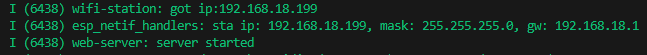
Com o endereço IP disponível, basta acessá-lo pelo navegador:
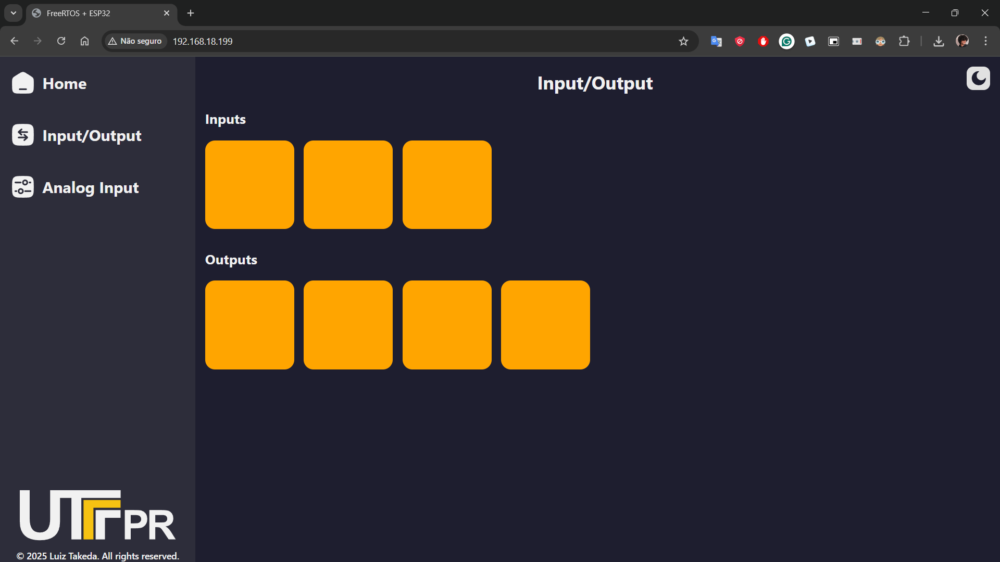
Interação com as saídas digitais:
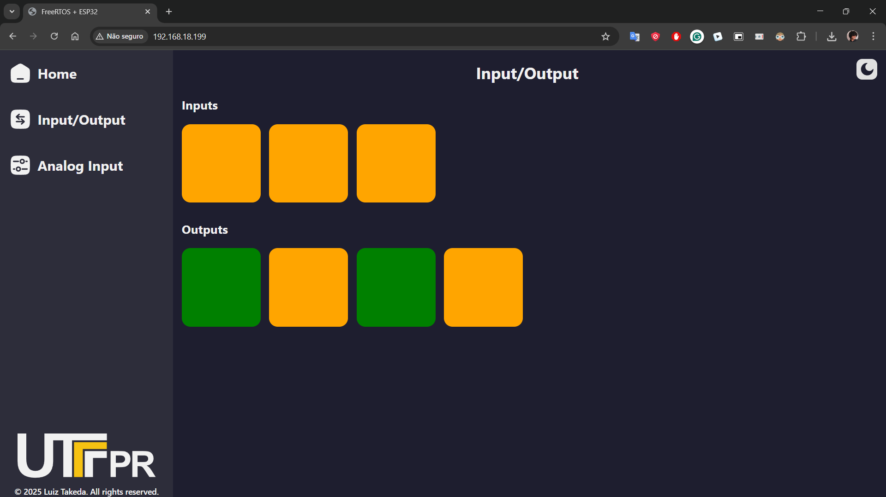
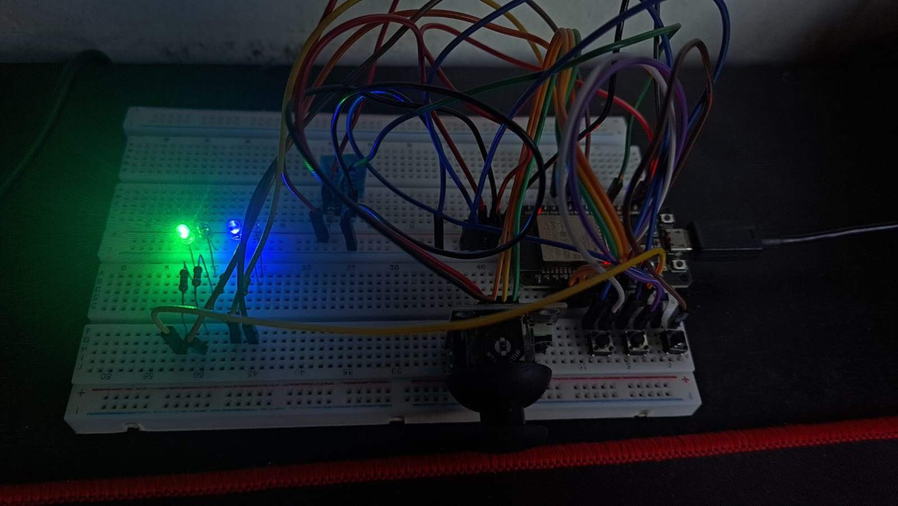
Interação com entradas digitais:
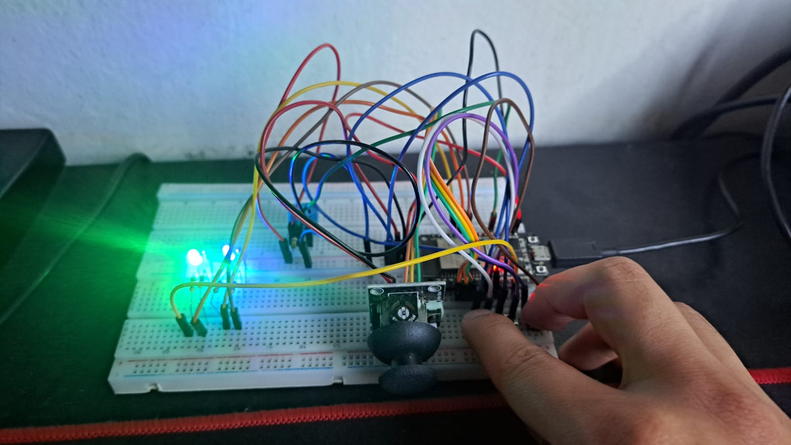
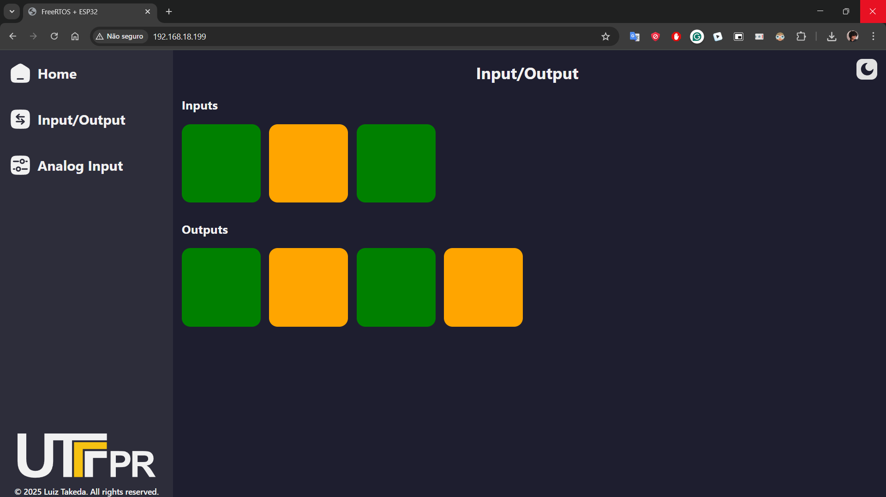
Interação com joystick (entradas analógicas):
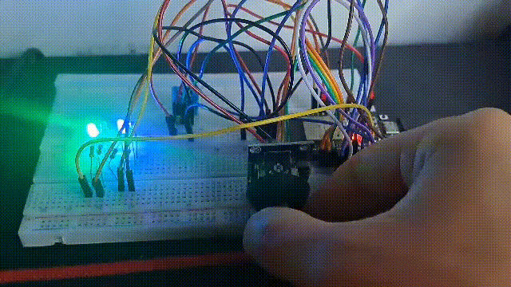
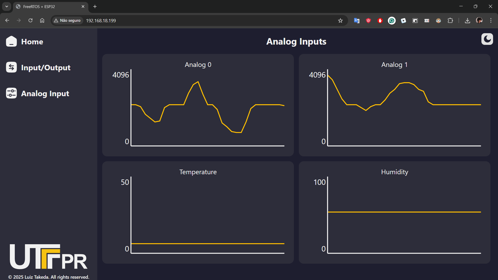
8.6 Considerações Finais
Espressif-Systems (2025)
Richard Barry (2025)
Maziero (2019)